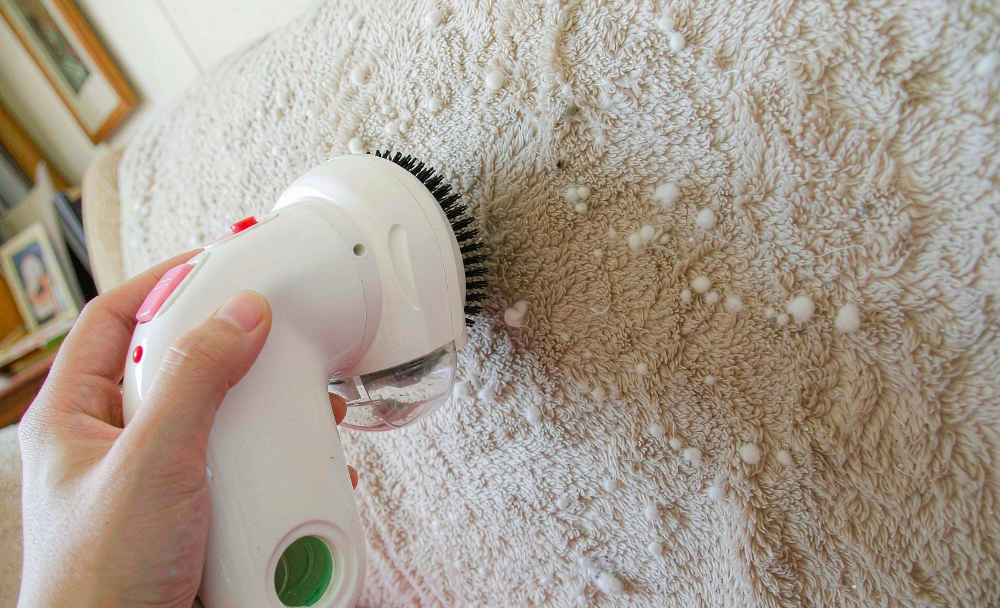

Why Your Custom Blanket Pills (And the Washing Routine That Stops It)
Short answer: blanket pilling comes from friction against rough fabrics and hot washing, not from the printed design, and an electric fabric shaver removes existing pills in about ten minutes without harming the print.
Bottom line: prevent new pills by washing the blanket alone in cold water on gentle, never with towels or jeans, and skipping the dryer entirely.

It is the most common care complaint on custom blankets: little fabric balls covering the surface after a few months, usually worst where the blanket rubs against a sofa. The good news is that pilling is a friction and laundry problem with a cheap fix, and the print underneath is usually untouched.
What Actually Causes Pilling
Short fibers on the fabric surface tangle into balls where the blanket experiences repeated rubbing: against your jeans, against a sofa's weave, or against towels in the wash. Hot water and tumble drying accelerate it by weakening fibers so they break off and tangle faster. Photo prints sit below or within the pile, so pills form over and around the print, not because of it.
The Ten-Minute Rescue
Lay the blanket flat on a hard surface and pull it taut. Run an electric fabric shaver, the $12 to $18 kind sold for sweaters, in slow overlapping passes, emptying the lint chamber twice. The pills collect, the print and the base fabric emerge untouched. A disposable razor works in a pinch with a very light touch, but the shaver is faster and safer.
The Routine That Prevents New Pills
Wash the blanket alone or with similar fleece items, cold water, gentle cycle, liquid detergent, and hang dry or tumble with no heat. Never wash it with towels, denim, or anything with zippers. The blankets in our care tests that followed this routine showed almost no new pilling over four months, while the blanket washed weekly with towels pilled again within six weeks of shaving.
Pilling: Cause, Fix, Prevention
| Stage | Action | Time |
|---|---|---|
| Existing pills | Electric fabric shaver on a flat, taut surface | ~10 minutes |
| Every wash | Alone, cold, gentle, liquid detergent | per wash |
| Drying | Hang dry or no-heat tumble | per wash |
| Avoid | Towels, denim, zippers, hot dryer | always |
Which Blankets Pill First
Not every custom blanket behaves the same way. Pilling tracks fiber length and yarn twist more than anything else. Short-staple fleece and brushed polyester shed loose fiber ends that tangle quickly, while tighter knits with longer fibers keep their surface much longer. That is why two blankets printed in the same run can look a year apart if one lived on a couch and the other stayed folded in a closet.
Weight matters too. A heavier throw resists friction simply because more fiber mass absorbs the rubbing, while a lightweight travel blanket in the same print design shows surface wear sooner. If you are choosing between two custom blankets for daily couch use, the heavier option looks new longer even when the print itself is identical. Weight is the spec most buyers ignore and the one they notice eighteen months later.
Print placement is the third variable. A large print area changes how the fabric flexes under the hand, and the boundary between printed and unprinted zones is often where pills collect first, because the two areas recover from stretching at different rates. Designs with a lot of open background give the pile more room to move, which usually means less concentrated rubbing in any single spot.
Finally, the surroundings do more damage than the blanket. A textured sofa weave, a rough wicker basket, and a hook-and-loop closure on a nearby jacket all act like sandpaper over months of contact. If a blanket is already pilling in one specific place, look at what it touches there before you blame the fabric or the print.
Six Habits That Make Pilling Worse
Most re-pilling cases trace back to a habit rather than a defect. The six below cover nearly every care message we receive, and each one is fixable the same week. None of them involve the printed design, which is worth saying plainly: the print sits below or within the pile, so it is a witness to the friction rather than a cause of it.
Two of these deserve a longer note. Fabric softener feels harmless because it makes the surface slippery, but the residue it leaves between fibers reduces their ability to slide back into place, so the surface tangles more easily. And the overloaded washer is the most common cause of a blanket that pilled everywhere at once rather than in one worn zone, because a stuffed drum turns a gentle cycle into a full hour of fabric against fabric.
Fix any one habit and the pilling rate usually drops. Fix three and the blanket tends to stay stable between shaves instead of needing attention every month, which is the actual goal of a care routine. Our custom gift care tips cover the same logic for the rest of the catalog.
- Washing blankets in the same load as towels, denim, or anything with zippers
- Using hot water or a hot tumble-dry cycle
- Overloading the washer so fleece rubs against itself for a full cycle
- Bleach and fabric softener, which weaken fibers and leave a residue behind
- Pulling at loose fiber with fingers or tape instead of trimming it level
- Storing a blanket compressed against a rough basket or a metal hook
When a Shave Is No Longer Enough
There is a point where shaving stops being a fix. If the surface feels thin, if the base color shows through where the print used to sit, or if pills return within two weeks of a shave, the fabric has lost fiber mass rather than simply collected it. That is a wear pattern, not a maintenance problem, and another pass with the shaver will only make the thin spots more obvious.
A quick test explains what is happening. Rub a coin-sized area with a fingernail in one direction. A healthy fleece surface moves as a unit. A worn one sheds loose lint immediately and shows a paler patch under the finger, because the fiber that used to cover it has already broken away. Once that happens in more than a few places, the blanket is at the end of its useful life as a daily throw.
For a keepsake, photo or memorial blanket, the answer is to change its job rather than replace it. Fold it over a chair back, drape it on a quilt rack, or display it on a bed that is not slept in, and stop the friction cycle entirely. The print stays intact and the piece keeps its meaning, which is usually the point of a custom blanket in the first place. The same reasoning applies when you choose the photo you print, since a preserved print is only worth preserving if the image was sharp.
For an everyday blanket, replacement is usually simpler than repair. A custom throw is a wear item like any other, and reordering the same design with a freshened photo generally costs less than the time spent nursing a worn surface. Custom blankets in our catalog start at $39.99, so a second one is a reasonable decision rather than an indulgence.
Frequently Asked Questions
How do I remove pilling from a custom blanket without damaging the print?
Pull the blanket taut on a flat surface and run an electric fabric shaver in slow overlapping passes. The pills collect in the shaver's chamber while the print and base fabric remain untouched.
Does washing a custom blanket with other laundry cause pilling?
Yes: friction against towels, denim, and zippers is the main cause of new pills. Wash blankets alone or with similar fleece items in cold water on the gentle cycle.
Can pilling come back after I remove it?
It can if the laundry habits stay the same. Blankets washed alone in cold water showed almost no new pilling over four months in our tests, while one washed weekly with towels re-pilled within six weeks.